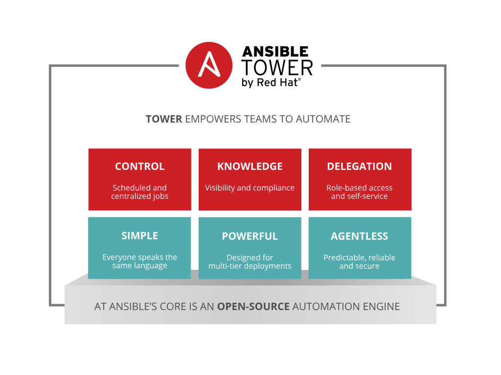

Ansible Tower by Red Hat helps you scale IT automation, manage complex deployments and speed productivity. Centralize and control your IT infrastructure with a visual dashboard, role-based access control, job scheduling and graphical inventory management.
What is Ansible Tower
How Ansible Tower Works
Installing Ansible Tower
Key Features
What is Ansible Tower?
Ansible Tower is an enterprise framework for controlling, securing and managing your Ansible automation – with a UI and RESTful API
Role-based access control keeps environments secure, and teams efficient
Non-privileged users can safely deploy entire applications with push-button deployment access
All Ansible automations are centrally logged, ensuring complete auditability and compliance

Platform Overview
Installing Ansible Tower
# the most common and preferred way of
# installation for RHEL CentOS or Ubuntu
$ wget https://bit.ly/ansibletower
# bundled installer can be downloaded for
# CentOS or RHEL at
$ wget https://bit.ly/ansibletowerbundle
Requirements
Red Hat Enterprise Linux (RHEL) 7, CentOS 7 and Ubuntu 14.04. 64-bit support required (kernel and runtime).
A currently supported version of Mozilla Firefox or Google Chrome.
2 GB RAM minimum (4+ GB RAM highly recommended)
20 GB of dedicated hard disk space
Demo Time: Installing Ansible Tower
Workshop: Installing Ansible Tower
Key Features of Ansible Tower
Dashboard and User Interface
User Base -- Organizations, Teams & Users
Credentials
Inventories
Projects
Job Templates & Jobs
Role Based Access Control (RBAC)
Dashboard and User Interface
User Base
A user is an account to access Tower and its services given the permissions granted to it.
An organization is a logical collection of users, teams, projects, inventories and more. All entities belong to an organization with the exception of users.
Teams provide a means to implement role-based access control schemes and delegate responsibilities across organizations.
Credentials
Credentials are utilized by Tower for authentication with various external resources:
Connecting to remote machines to run jobs
Syncing with inventory sources
Importing project content from version control systems
Connecting to and managing networking devices
Centralized management of various credentials allows end users to leverage a secret without ever exposing that secret to them.
Inventory
Inventory is a collection of hosts (nodes) with associated data and groupings that Tower can connect to and manage.
Hosts (nodes)
Groups
Inventory-specific data (variables)
Static or dynamic sources
Projects
A Project is a logical collection of Ansible Playbooks, represented in Tower.
You can manage Playbooks and Playbook directories by placing them in a source code management system supported by Tower, including Git, Subversion, and Mercurial.
You can have multiple projects for doing any range of job types.
You can manually place playbooks under the Project Base Path on your Tower server instead of using version control. This is not recommended in general and considered an advanced use case.
Job Templates
A job template is a definition and set of parameters for running an Ansible Playbook.
Job templates are useful to execute the same job many times and encourage the reuse of Ansible Playbook content and collaboration between teams.
Jobs
A job is an instance of Tower launching an Ansible Playbook against an inventory of hosts.
Job results can be easily viewed
View the standard out for a more in-depth look
Role Based Access Control (RBAC)
Role-Based Access Controls (RBAC) are built into Ansible Tower and allow administrators to delegate access to server inventories, organizations, and more. These controls allow Tower to help you increase security and streamline management of your Ansible automation.
Role Based Access Control (RBAC)
Demo Time: Ansible Tower Basic Setup & Job Run
Workshop: Ansible Tower Basic Setup & Your First Job Run
Dynamic Inventory in Ansible Tower
Dynamic inventory is a script that queries a service, like a cloud provider API or a management application. This data is formatted in an Ansible-specific JSON data structure and is used in lieu of static inventory files.
Groups are generated based on host metadata
Single source of truth saves time, avoids duplication and reduces human error
Dynamic and static inventory sources can be used together
Demo: Ansible Tower Dynamic Inventory
More with Ansible Tower
User Surveys (Self-Service)
Job Scheduling
Notifications
Ad-Hoc Commands
Workflows (New in v3.1)
System Scanning
Logging Aggregation (New in v3.1)
Advance Configuration Options
Next Steps
It’s easy to get started ansible.com/get-started
Try Ansible Tower for free: ansible.com/tower-trial